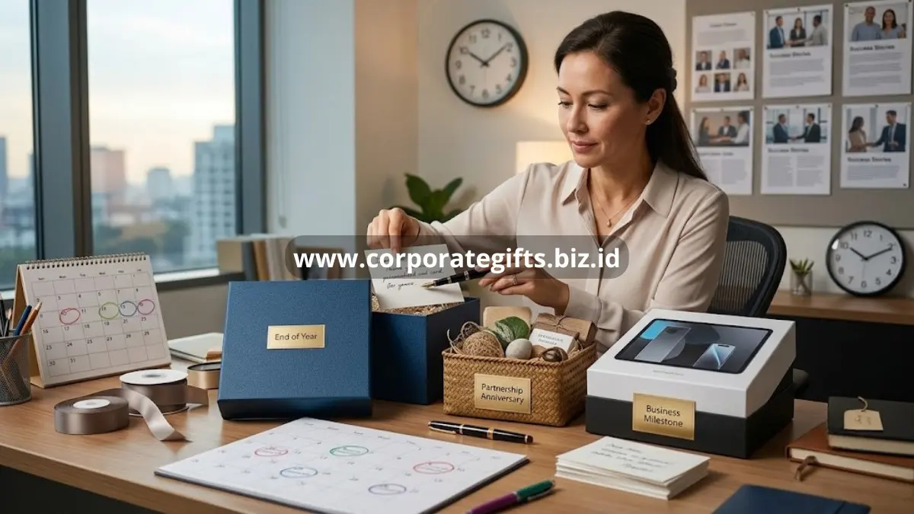

Poin Penting:
- Momen akhir tahun dan ulang tahun kemitraan menjadi waktu paling umum untuk client appreciation gifts.
- Hadiah tak terduga di luar musim umum sering meninggalkan kesan lebih dalam.
- Etika bisnis dan sensitivitas budaya penting diperhatikan sebelum memberikan hadiah kepada klien.
- Frekuensi pemberian hadiah sebaiknya disesuaikan dengan skala dan durasi hubungan bisnis.
- CorporateGifts membantu perusahaan menentukan momen dan jenis hadiah yang paling relevan.
Waktu terbaik memberikan client appreciation gifts adalah pada momen yang memiliki makna nyata bagi hubungan bisnis, seperti akhir tahun, ulang tahun kemitraan, atau pencapaian penting dalam kerja sama. Ketepatan waktu pemberian hadiah sering kali lebih menentukan dampak emosionalnya dibandingkan nilai materi hadiah itu sendiri. Artikel ini membahas berbagai momen strategis serta etika yang perlu diperhatikan perusahaan sebelum memberikan client appreciation gifts.
Kapan Waktu Paling Umum Memberikan Client Appreciation Gifts?
Waktu paling umum memberikan client appreciation gifts adalah menjelang akhir tahun, sebagai bentuk terima kasih atas kerja sama sepanjang periode tersebut. Momen ini dipilih karena bersifat rutin, dapat direncanakan jauh hari, dan diterima secara luas sebagai bagian dari etika bisnis di berbagai industri.
Selain akhir tahun, banyak perusahaan juga memanfaatkan momen ulang tahun kemitraan bisnis sebagai waktu pemberian client appreciation gifts. Penelitian yang dirangkum Forbes pada laporan industri gifting korporat mencatat bahwa hampir separuh perusahaan memberikan hadiah kepada klien dan mitra sebagai bentuk apresiasi, di luar momen hari raya rutin. Hal ini menunjukkan bahwa momen personal seperti anniversary kerja sama semakin dianggap penting dalam strategi hubungan klien.
Mengapa Momen Tak Terduga Lebih Berkesan?
Momen tak terduga di luar musim hadiah rutin cenderung lebih berkesan karena klien tidak mengantisipasinya, sehingga hadiah terasa lebih tulus dan personal. Pemberian client appreciation gifts secara spontan, misalnya setelah klien mencapai pencapaian bisnis tertentu atau sebagai ucapan terima kasih atas dukungan dalam situasi tertentu, sering kali meninggalkan kesan emosional yang lebih kuat dibandingkan hadiah rutin tahunan.

Elemen kejutan dalam pemberian hadiah memiliki nilai psikologis tersendiri, karena penerima cenderung mengasosiasikan pengalaman positif tersebut secara lebih kuat dengan pemberi hadiah. Karena itu, selain menjadwalkan hadiah rutin, perusahaan disarankan menyisihkan sebagian anggaran untuk momen apresiasi spontan yang relevan dengan pencapaian klien.
Momen Pasca Proyek dan Pencapaian Bisnis
Momen setelah penyelesaian proyek besar atau pencapaian target bisnis bersama merupakan waktu strategis untuk memberikan client appreciation gifts. Pada momen ini, hadiah berfungsi sebagai penutup positif dari sebuah kerja sama, sekaligus membuka peluang untuk memperpanjang hubungan bisnis ke tahap berikutnya.
Pemberian hadiah pada momen ini sebaiknya disertai komunikasi yang menegaskan apresiasi perusahaan terhadap kontribusi klien selama proses kerja sama berlangsung, bukan sekadar formalitas penutup transaksi. Pendekatan ini membantu memastikan hadiah tidak terkesan transaksional, melainkan sebagai bentuk penghargaan atas hubungan yang telah dibangun.
Etika yang Perlu Diperhatikan Saat Memberikan Hadiah kepada Klien
Etika yang perlu diperhatikan saat memberikan client appreciation gifts mencakup kesesuaian nilai hadiah dengan kebijakan internal perusahaan klien, sensitivitas terhadap latar belakang budaya, serta transparansi terkait tujuan pemberian hadiah. Beberapa perusahaan memiliki kebijakan ketat terkait batas nilai hadiah yang boleh diterima karyawannya, sehingga penting bagi pemberi hadiah untuk memahami konteks ini agar tidak menimbulkan situasi yang tidak nyaman bagi klien.
Selain itu, waktu pemberian hadiah sebaiknya dihindarkan dari periode negosiasi kontrak yang sedang berlangsung, karena berpotensi menimbulkan kesan hadiah tersebut bertujuan memengaruhi keputusan bisnis. Client appreciation gifts idealnya diberikan sebagai bentuk apresiasi murni, terpisah dari proses negosiasi aktif.
Seberapa Sering Perusahaan Sebaiknya Memberikan Client Appreciation Gifts?
Frekuensi pemberian client appreciation gifts sebaiknya disesuaikan dengan skala dan durasi hubungan bisnis, namun umumnya berkisar antara satu hingga beberapa kali dalam setahun agar tetap terasa istimewa. Pemberian yang terlalu sering berisiko mengurangi nilai eksklusivitas hadiah, sementara pemberian yang terlalu jarang dapat membuat klien merasa kurang diperhatikan.
Sebagai gambaran umum, banyak perusahaan menetapkan pola pemberian hadiah pada momen akhir tahun sebagai agenda utama, ditambah satu hingga dua momen apresiasi spontan sepanjang tahun yang disesuaikan dengan perkembangan hubungan bisnis. Pola ini membantu menjaga keseimbangan antara konsistensi apresiasi dan menjaga kesan hadiah tetap istimewa.
Ketepatan waktu menjadi salah satu faktor penentu keberhasilan client appreciation gifts dalam memperkuat hubungan bisnis. Momen akhir tahun, ulang tahun kemitraan, pasca proyek besar, hingga momen tak terduga masing-masing memiliki peran strategis tersendiri, selama diberikan dengan memperhatikan etika bisnis yang berlaku.
Agar perusahaan Anda tidak perlu memikirkan detail teknis perencanaan momen dan pengadaan hadiah, CorporateGifts siap membantu merancang jadwal dan pilihan client appreciation gifts yang sesuai dengan kebutuhan bisnis Anda. Konsultasikan kebutuhan hadiah klien perusahaan Anda bersama CorporateGifts sekarang.
FAQ
1. Kapan waktu paling umum memberikan client appreciation gifts?
Menjelang akhir tahun dan momen ulang tahun kemitraan bisnis menjadi waktu paling umum karena dapat direncanakan dan diterima secara luas.
2. Mengapa momen tak terduga sering kali lebih berkesan?
Karena klien tidak mengantisipasinya, hadiah di momen tak terduga terasa lebih tulus, personal, dan memberikan kesan emosional yang lebih kuat.
3. Kapan waktu strategis lainnya selain akhir tahun?
Setelah penyelesaian proyek besar atau pencapaian target bisnis bersama adalah waktu strategis sebagai penutup positif dan pembuka peluang baru.
4. Apa etika yang harus diperhatikan saat memberikan hadiah klien?
Pastikan nilai hadiah sesuai dengan kebijakan internal klien, perhatikan sensitivitas budaya, dan hindari pemberian hadiah saat periode negosiasi kontrak aktif.
5. Seberapa sering idealnya memberikan hadiah kepada klien?
Disarankan satu hingga beberapa kali dalam setahun; biasanya momen akhir tahun ditambah satu atau dua momen apresiasi spontan agar tetap istimewa.
Butuh rekomendasi cepat untuk corporate gift?
Chat tim Pusat Souvenir & Merchandise Kantor untuk kurasi pilihan sesuai budget & kebutuhan brand Anda.